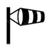

Retour à l'accueil
| J | F | M | A | M | J | J | A | S | O | N | D | |
|---|---|---|---|---|---|---|---|---|---|---|---|---|
 |
||||||||||||
 |
- Type de plante :
- vivace
- Cycle de vie :
- 3+ ans
- Intérêt :
- jardins, bordures, couvre-sol,
- terrasses,
- rocailles,
- balcons,
- mellifère
 terrasses,
terrasses,
 balcons,
balcons,
- Utilisation :
- pleine terre,
- pots
 Utilisation :
Utilisation : pots
pots
- Couleurs :
 Couleurs :
Couleurs :


- Forme et feuillage :
- feuillage persistant/caduc
 feuillage persistant/caduc
feuillage persistant/caduc
- Dimensions :
- 20 à 30 cm.
- 30 à 40 cm.
- croissance normale.
 Dimensions :
Dimensions :
 20 à 30 cm.
20 à 30 cm.
 30 à 40 cm.
30 à 40 cm.
 croissance normale.
croissance normale.
- Méthode de multiplication
- semis,
- division,
 Méthode de multiplication
Méthode de multiplication
 semis,
semis,
- environnement :
- jusqu’à -20°
- soleil et mi-ombre
- besoin normal
- Type de sols : argileux, calcaire, sableux, caillouteux, humus, drainé, humide sans excès.
- alcalin, neutre, acide.
-  océanique, semi-océanique, continental, méditerranéen, montagnard.
 environnement :
environnement :
 jusqu’à -20°
jusqu’à -20°
 soleil et mi-ombre
soleil et mi-ombre
 besoin normal
besoin normal
 Type de sols : argileux, calcaire, sableux, caillouteux, humus, drainé, humide sans excès.
Type de sols : argileux, calcaire, sableux, caillouteux, humus, drainé, humide sans excès.
 alcalin, neutre, acide.
alcalin, neutre, acide.